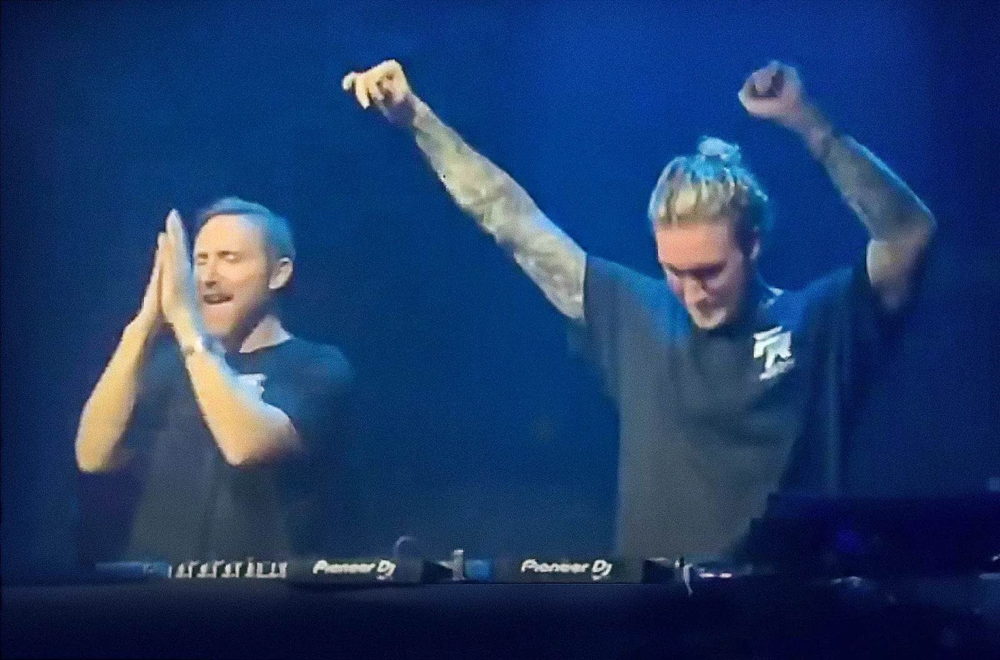

THE POLLOct 8, 2026
From the archive
Six Times
DJ Mag crowned David Guetta No. 1 for a sixth time. The top two names held. Under them, three DJs climbed 22 places and split one prize.
- format
- Essay
- date
- Oct 8, 2026
- places
- Ibiza, London
- artists
- Anyma, David Guetta
- words
- 783 words · 3 min
- photo
- Photo: WorldMixNation
- catalogue
- CC004
Give the planet a vote and David Guetta finishes first, which he has now done for the sixth time.
DJ Mag’s Top 100 DJs is a public ballot, not a critics’ list. This year’s was read out live at [UNVRS] on Tuesday 6 October, the second year the reveal has been staged in that room. The first win was 2011, then 2020, 2021, 2023 and 2025. Martin Garrix stays at 2. Armin van Buuren, five titles of his own and the trance prize again, is at 7. Guetta is now alone ahead of both of them.
A record number of votes came in from 234 territories. Chinese voters used a dedicated app. Svalbard had a say, and so did Wallis and Futuna. A ballot you can cast from Svalbard crowns the name on the poster.
Guetta called it the first summer in a long run without a pop hit, and the biggest he has had. Galactic Circus, his show at [UNVRS], and Fuck Me I’m Famous, his party at Ushuaïa, sold out faster than before. Three nights at the Stade de France moved more than 240,000 tickets, with Armin van Buuren, Black Coffee, Jennifer Lopez and the Black Eyed Peas among the guests. He told the magazine that everything can be faked, and that selling tickets cannot. “DNA (More Than A Game)” put him with Andrea Bocelli, Megan Thee Stallion and EJAE. He kept a foot in the club as well: Future Rave with MORTEN, a first back-to-back with Carl Cox, the two of them sharing the decks, and “Caught Up” with Marlon Hoffstadt. In summer 2027 the Monolith show is booked for the O2 in London.
No. 1 is name recognition, not a musical result, and anyone buying records can skip it without missing the night. The movement is underneath. Anyma climbed seven places, from 10 to 3. Charlotte de Witte went from 9 to 6 and kept the techno title, a placing a small floor can use. FISHER slipped from 7 to 9 and took the house title again, after another season in the same building. Vintage Culture is the new face in the top 10, up one place to 10. Afrojack dropped seven, to 15, and left the ten.
House did the climbing the magazine chose to medal. For the first time the highest-climber prize is shared, three ways, 22 places each. John Summit went from 46 to 24. Mau P went from 77 to 55. Chris Stassy, billed until now as Chris Stussy, went from 81 to 59. Josh Baker, who holds a residency at Amnesia, a regular night rather than a guest slot, is the highest new entry, straight in at 40. Padre Guilherme, a Catholic priest whose sets DJ Mag calls the most surprising new entry on the list, is at 79. Indira Paganotto rose ten places, broke the top 30 at 26, and took the poll’s first prize for psychedelic music. Two nights later she was back in the [UNVRS] main room closing ARTCORE.
The room had already won a poll of its own. In April, DJ Mag’s Top 100 Clubs put [UNVRS] at No. 1 in its first year. It opened on 30 May 2025 on the old Privilege site, 10,000 capacity, from The Night League, the first club to go straight to the top since the staff-made list of 2006, and the first to do it inside a year of opening. Before Guetta’s two hours came Lost Frequencies, Charlotte de Witte, Anyma, Korolova, Anastazja, and GORDO back to back with Vintage Culture. Anastazja, Chicago-born and a resident on Rinse FM, a London radio station, took the future-star prize. Luciano took outstanding contribution. One of them has been No. 1 for fifteen years of restarts, and the other has been open for one summer and a closing.
Bridges for Music sits beside the count. Last year 42 names put in £170,832 for the academy in Langa. This year each artist in the hundred is invited to sponsor one student. The invitation is not a placing, and the placing put Guetta first.
Sources
- DJ Mag, “David Guetta crowned The World’s No. 1 DJ in DJ Mag’s Top 100 DJs 2026” (7 October 2026): https://djmag.com/news/david-guetta-crowned-worlds-no-1-dj-dj-mags-top-100-djs-2026
- DJ Mag, “Top 100 DJs 2026: record-breaking numbers vote in our annual poll” (7 October 2026): https://djmag.com/features/dj-mag-top-100-djs-2026-record-breaking-numbers-vote-our-annual-poll-of-worlds-top-djs
- DJ Mag, “John Summit, Mau P and Chris Stassy are joint Highest Climbers” (7 October 2026): https://djmag.com/news/john-summit-mau-p-and-chris-stassy-are-joint-highest-climbers-dj-mags-top-100-djs-2026
- DJ Mag, “[UNVRS] voted World’s No.1 Club in DJ Mag Top 100 Clubs poll 2026” (15 April 2026): https://djmag.com/news/unvrs-voted-worlds-no1-club-dj-mag-top-100-clubs-poll-2026
- DJ Mag, “Top 100 Clubs 2026: record-breaking numbers vote” : https://djmag.com/features/dj-mag-top-100-clubs-2026-record-breaking-numbers-vote-our-annual-poll-of-worlds-best
- Techno Airlines, full 1–100 with movement against 2025, updated 8 October 2026 from the DJ Mag results: https://www.technoairlines.com/blog/dj-mag-top-100-djs-2026-results